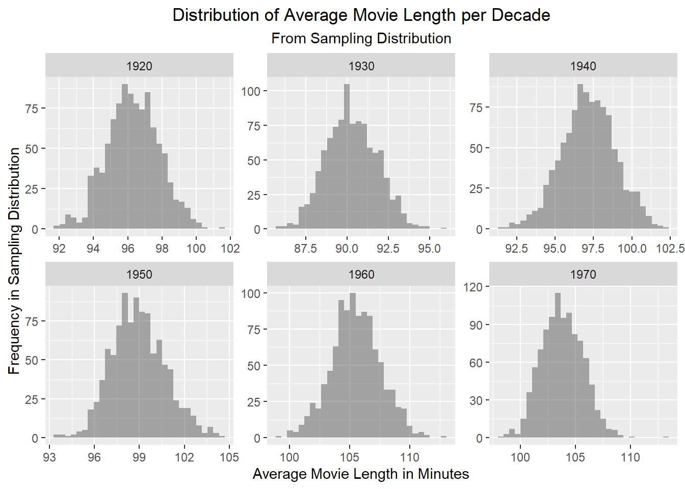

library(tidyverse)
library(dplyr)
library(ggplot2)
library(mosaic)
library(tidyr)
library(patchwork)Exercise 05
Prelims
Challenge 1
Step 1: Reading the Data
d <- read_csv("IMDB-movies.csv")Rows: 28938 Columns: 10
── Column specification ────────────────────────────────────────────────────────
Delimiter: ","
chr (6): tconst, titleType, primaryTitle, genres, nconst, director
dbl (4): startYear, runtimeMinutes, averageRating, numVotes
ℹ Use `spec()` to retrieve the full column specification for this data.
ℹ Specify the column types or set `show_col_types = FALSE` to quiet this message.Step 2: Filtering the Data
filtered_data <- d %>%
filter(runtimeMinutes >= 60 & runtimeMinutes <= 180, startYear >= 1920 & startYear <= 1979) %>%
mutate(Decade = floor(startYear/10)*10)Step 3: Histogram of Movie Length Frequency by Decade
Histogram1 <- ggplot(filtered_data, aes(x = runtimeMinutes)) +
geom_histogram(aes(binwidth = (max(runtimeMinutes) - min(runtimeMinutes)) / 10), alpha = 0.5) +
facet_wrap(~Decade, scales = "free") +
labs(title = "Distribution of Movie Length by Decade",
x= "Movie Length in Minutes",
y= "Frequency") +
theme(plot.title = element_text(hjust = 0.5))Warning in geom_histogram(aes(binwidth = (max(runtimeMinutes) -
min(runtimeMinutes))/10), : Ignoring unknown aesthetics: binwidthprint(Histogram1)`stat_bin()` using `bins = 30`. Pick better value with `binwidth`.Step 4: Population Mean and Standard Deviation
Results <- filtered_data %>%
group_by(Decade) %>%
summarise(
pop_mean = mean(runtimeMinutes),
pop_sd= sd(runtimeMinutes))
print(Results)# A tibble: 6 × 3
Decade pop_mean pop_sd
<dbl> <dbl> <dbl>
1 1920 96.3 26.2
2 1930 90.3 17.3
3 1940 97.2 19.1
4 1950 98.9 19.2
5 1960 106. 21.2
6 1970 104. 18.0Step 5: Single Sample Mean and Standard Deviation
Sample <- filtered_data %>%
group_by(Decade) %>%
slice_sample(n=100) %>%
summarise(
sample_mean = mean(runtimeMinutes),
sample_sd = sd(runtimeMinutes))
print(Sample)# A tibble: 6 × 3
Decade sample_mean sample_sd
<dbl> <dbl> <dbl>
1 1920 96.2 26.4
2 1930 90.8 14.7
3 1940 98.3 15.5
4 1950 96.1 15.2
5 1960 102. 18.7
6 1970 102. 15.4Step 6: Standard Error for the Sample Mean
Sample <- mutate(Sample, sample_se = sample_sd / sqrt(100))
print(Sample)# A tibble: 6 × 4
Decade sample_mean sample_sd sample_se
<dbl> <dbl> <dbl> <dbl>
1 1920 96.2 26.4 2.64
2 1930 90.8 14.7 1.47
3 1940 98.3 15.5 1.55
4 1950 96.1 15.2 1.52
5 1960 102. 18.7 1.87
6 1970 102. 15.4 1.54Step 7: Comparison of Sample and Population Mean and Standard Deviation
Results <- mutate(Results, pop_se = Results$pop_sd/sqrt(100))
Results$z_score <- (Sample$sample_mean - Results$pop_mean) / Results$pop_se
Results$p_score <- 2 * (1 - pnorm(abs(Results$z_score)))
Compare_Table <- merge(Results, Sample, by = "Decade")
print(Compare_Table) Decade pop_mean pop_sd pop_se z_score p_score sample_mean
1 1920 96.25658 26.20133 2.620133 -0.02159392 0.98277188 96.20
2 1930 90.30000 17.28879 1.728879 0.30655702 0.75918057 90.83
3 1940 97.20332 19.12372 1.912372 0.56823425 0.56987591 98.29
4 1950 98.94820 19.20646 1.920646 -1.49855638 0.13398876 96.07
5 1960 105.58586 21.23202 2.123202 -1.83960745 0.06582589 101.68
6 1970 103.75000 17.95934 1.795934 -0.99669599 0.31891209 101.96
sample_sd sample_se
1 26.41013 2.641013
2 14.69216 1.469216
3 15.45622 1.545622
4 15.23702 1.523702
5 18.69148 1.869148
6 15.35961 1.535961I used a z-test to compare the means of runtimeMinutes for the population and the single sample. This gave me z-scores for each decade, which I used to calculate the p-value for the z-score for each decade.
For the z-score:
Across all decades, the z-scores range from about -1 to 1. However, only a few scores are around 1 or -1, all other scores fell around 0, which means that the means are almost exactly equal for each decade.
For the p-value:
The Null Hypothesis: the means are equal to each other
The Alternative Hypothesis: the means are significantly different to each other
Across all decades, the p-values are above 0.05. Even the lowest p-value score is high enough that there is not enough evidence to reject the null hypothesis, as it is greater than 0.05. Therefore, there is no significant difference between the means for each decade.
Step 8: Sampling Distribution
reps <- 1000
DistSample <- filtered_data %>%
group_by(Decade) %>%
do({
do(reps) * {
EachSample <- slice_sample(., n = 100, replace = FALSE)
summarise(EachSample,
DistSample_mean = mean(runtimeMinutes),
DistSample_sd = sd(runtimeMinutes))
}
})%>%
ungroup() %>%
select(-.row, -.index)
print(DistSample)# A tibble: 6,000 × 3
Decade DistSample_mean DistSample_sd
<dbl> <dbl> <dbl>
1 1920 95.8 26.0
2 1920 96.3 27.0
3 1920 93.7 25.7
4 1920 97.6 28.0
5 1920 96.0 26.9
6 1920 98.9 26.5
7 1920 98.3 26.7
8 1920 98.2 26.3
9 1920 96.2 26.0
10 1920 97.4 27.9
# ℹ 5,990 more rowsStep 9: Sampling Distribution Mean and Standard Deviation
DistSample_Results <- DistSample %>%
group_by(Decade) %>%
summarise(
distributionsample_mean = mean(DistSample_mean),
distributionsample_sd = sd(DistSample_mean))
print(DistSample_Results)# A tibble: 6 × 3
Decade distributionsample_mean distributionsample_sd
<dbl> <dbl> <dbl>
1 1920 96.3 1.49
2 1930 90.2 1.54
3 1940 97.1 1.84
4 1950 98.9 1.86
5 1960 106. 2.01
6 1970 104. 1.66Histogram2 <- ggplot(DistSample, aes(x = DistSample_mean)) +
geom_histogram(aes(
binwidth = (max(DistSample$DistSample_mean) - min(DistSample$DistSample_mean)) / 10), alpha = 0.5) +
facet_wrap(~Decade, scales = "free") +
labs(title = "Distribution of Average Movie Length per Decade",
subtitle = "From Sampling Distribution",
x = "Average Movie Length in Minutes",
y = "Frequency in Sampling Distribution") +
theme(plot.title = element_text(hjust = 0.5),
plot.subtitle = element_text(hjust = 0.5))Warning in geom_histogram(aes(binwidth = (max(DistSample$DistSample_mean) - :
Ignoring unknown aesthetics: binwidthprint(Histogram2)Warning: Use of `DistSample$DistSample_mean` is discouraged.
ℹ Use `DistSample_mean` instead.Warning: Use of `DistSample$DistSample_mean` is discouraged.
ℹ Use `DistSample_mean` instead.`stat_bin()` using `bins = 30`. Pick better value with `binwidth`.
Step 10: Comparison of Standard Error for Single Sample, Population, and Sampling Distribution
#Join all pop, sample, and sampling distribution info into one tibble to make it easier...
Complete <- Results %>%
left_join(Sample, by = "Decade") %>%
left_join(DistSample_Results, by = "Decade")
CompleteCompare <- Complete %>%
mutate(
z_pop_sample = Results$z_score,
p_pop_sample = 2 * (1 - pnorm(abs(z_pop_sample))),
z_pop_dist = (Complete$distributionsample_mean - Complete$pop_mean) / Complete$pop_se,
p_pop_dist = 2 * (1 - pnorm(abs(z_pop_dist))),
z_sample_dist = (Complete$distributionsample_mean - Complete$sample_mean) / Complete$distributionsample_sd,
p_sample_dist = 2 *(1 - pnorm(abs(z_sample_dist)))
)
CompleteCompare <- CompleteCompare %>%
select(Decade, pop_mean, sample_mean, distributionsample_mean, z_pop_sample, p_pop_sample, z_pop_dist, p_pop_dist, z_sample_dist, p_sample_dist)
print(CompleteCompare)# A tibble: 6 × 10
Decade pop_mean sample_mean distributionsample_mean z_pop_sample p_pop_sample
<dbl> <dbl> <dbl> <dbl> <dbl> <dbl>
1 1920 96.3 96.2 96.3 -0.0216 0.983
2 1930 90.3 90.8 90.2 0.307 0.759
3 1940 97.2 98.3 97.1 0.568 0.570
4 1950 98.9 96.1 98.9 -1.50 0.134
5 1960 106. 102. 106. -1.84 0.0658
6 1970 104. 102. 104. -0.997 0.319
# ℹ 4 more variables: z_pop_dist <dbl>, p_pop_dist <dbl>, z_sample_dist <dbl>,
# p_sample_dist <dbl>I used a z-test to compare the means of runtimeMinutes for the population, the single sample, and the sampling distribution during each decade. I calculated z-scores for population and single sample means, population and sampling distribution means, and single sample and sampling distribution means. This gave me three z-scores for each decade, which I used to calculate the p-value for each z-score for each decade.
For the z-score:
Across all comparisons, the z-scores range from about -1 to 1. However, most scores fell around 0, which means that the three means are almost exactly equal, only a few z-scores were above or below 0 by more than a few decimal points.
For the p-value:
The Null Hypothesis: the means are equal to each other
The Alternative Hypothesis: the means are significantly different to each other
Across all comparisons, the p-values are above 0.05. Even the lowest p-value score is high enough that there is not enough evidence to reject the null hypothesis. Therefore, there is no significant difference between the means for the population, the single sample, and the sampling distribution.
Challenge 2
Step 1: Reading the file
e <- "https://raw.githubusercontent.com/difiore/ada-datasets/main/zombies.csv"
z <- read_csv(e)Rows: 1000 Columns: 10
── Column specification ────────────────────────────────────────────────────────
Delimiter: ","
chr (4): first_name, last_name, gender, major
dbl (6): id, height, weight, zombies_killed, years_of_education, age
ℹ Use `spec()` to retrieve the full column specification for this data.
ℹ Specify the column types or set `show_col_types = FALSE` to quiet this message.Step 2: Population Mean and Standard Deviation
z_long <- z %>%
pivot_longer(cols = c("height", "weight", "zombies_killed", "years_of_education", "age"),
names_to = "variable",
values_to = "value")
calc_sd <- function(x){
sqrt(sum((x - mean(x))^2) / length(x)) }
z_pop_results <- z_long %>%
group_by(variable) %>%
summarise(
z_pop_mean = mean(value, na.rm = TRUE),
z_pop_sd= calc_sd(value)
)
print(z_pop_results)# A tibble: 5 × 3
variable z_pop_mean z_pop_sd
<chr> <dbl> <dbl>
1 age 20.0 2.96
2 height 67.6 4.31
3 weight 144. 18.4
4 years_of_education 3.00 1.68
5 zombies_killed 2.99 1.75Step 3: Boxplots of Each Variable by Gender
z_Box1 <- ggplot(z_long, aes(x=gender, y=value, fill=gender)) +
geom_boxplot() +
facet_wrap(~variable, scales = "free_y") +
labs(
title = "Boxplot of Variables by Gender",
x = "Gender", y = "Value" ) +
theme_minimal() +
theme(
plot.title = element_text(hjust = 0.5),
legend.position = "none"
)
print(z_Box1)Step 4: Scatter Plots for Height and Weight in Relation to Age
z_Scatter1 <- ggplot(z, aes(x = age, y = weight, color = factor(gender))) +
geom_point() +
geom_smooth(method = "lm", se = FALSE, color = "black", size = 0.5) +
labs( title = "Relationship Between Weight and Age", x = "Age", y = "Weight", color = "Gender" ) +
theme(plot.title = element_text(hjust = 0.5), legend.position = "bottom") Warning: Using `size` aesthetic for lines was deprecated in ggplot2 3.4.0.
ℹ Please use `linewidth` instead.z_Scatter2 <- ggplot(z, aes(x = age, y = height, color = factor(gender))) +
geom_point() +
geom_smooth(method = "lm", se = FALSE, color = "black", size = 0.5) +
labs( title = "Relationship Between Height and Age", x = "Age", y = "Height", color = "Gender" ) +
theme(plot.title = element_text(hjust = 0.5), legend.position = "bottom")
z_Scatter_1_2 <- z_Scatter1 + z_Scatter2
print(z_Scatter_1_2)`geom_smooth()` using formula = 'y ~ x'
`geom_smooth()` using formula = 'y ~ x'